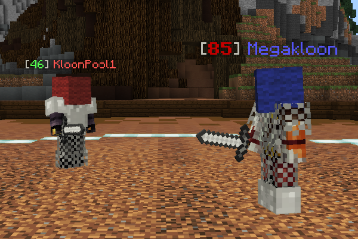

|
The Pit Update 0.3 - Improved Map, Events and Contracts!
|
|  |
| The new Blockhead event. |
| Release Date | March 19th, 2018 |
| Forums Approval | 98.3% |
| Forums Author | Minikloon |
| ← Tiny post-update patch —
The Pit 0.3.1
→
|
The Pit 0.3 was the third major version of the Hypixel Pit. It introduced cosmetic updates to the Elements map, major events, minor events, quests, contracts, additional perks, and other minor changes.
To improve the visuals of the Elements map, the following features were added:
- Leaves and bark to the tree at the center of the map
- Revamped pregame looks and launchers
- Additional launcher destinations
- Sky quadrant revamp
- "Close-quarter arena" between the Sky and Lava quadrant
- Tunnels in the Lava and Water quadrants
- Improved and recolorized terrain
Four major events – Rage Pit, Team Deathmatch, Beast, and Raffle – were added to the game. Additionally, the minor events 2x Rewards, King of the Hill, Everyone Gets a Bounty, and Care Package were introduced. Major events gave players a new way to obtain renown aside from prestiging. Minikloon stated that Hypixel was "looking for new ideas" for events.
The Quest Master NPC was added, providing players the ability to earn gold from quests and contracts.
The update added eight perks bought from the renown shop: Barbarian, Dirty, First Strike, Olympus, Rambo, Recon (at prestige II), Soup, and Thick.
Balance changes:
- (↑) The Mineman perk now rewards 3 cobblestone per kill (maximum of 64). Cobblestone now lasts for (15 → 8) seconds.
- (↑) Buffed the Gladiator perk from (−3% → −2%) per nearby player, with a maximum of 10 players (−30%). The perk will now also display the damage reduction in the sidebar.
- (↑) Decreased the cooldown for eating Golden Heads to 1 second (previously 2).
- (↑) Buffed the Streaker perk to a 3× XP bonus.
- (↑) Decreased the price of Trickle-down: (4,000g → 1,000g).
- (↑) Decreased the price of Gladiator: (10,000g → 4,000g).
- (↑) Decreased the price of Vampire: (10,000g → 4,000g).
- (↑) The first three kills each life now grant bonus XP and gold to players level 30 and above.
- (↑) Diamond weapons held by players now have a chance to drop on kill.
- (↑) Streak bonus XP[unclear] now scales up to level 80, but with "only a tad" more XP per kill than before.
- (↑) Decreased the gold cost for all "damage" passives.
- (↑) Recoloring the Fancy Hat is now affected by Scam Artist.
- (↑) Decreased the renown cost of the cosmetic launch trails.
- (↑) Decreased the prestige requirement of the Renown Gold Boost and Renown XP Bump to prestige I.
- (↓) Capped the maximum XP per kill at 250 XP.
Other changes & fixes:
- Accidentally removed—and then re-added—armor pieces dropping from players. Iron and diamond armor pieces not from perks now drop. The exception is the Lucky Diamond perk, whose perk items will always drop.
- Increased the maximum prestige from XXIII to XXX.
- Lucky Diamond now displays a message in chat when it triggers.
- The "Highest Streak" stat is now shown in the Stats NPC.
- Show perks that players are using in kill recaps.
- Added fishing. Only ingots and Diamond Swords can be caught.
- Fixed a bug where players would occasionally get double kill credit.
- Fixed an exploit involving infinite cobblestone.
- Fixed being able to heal yourself with arrows and the Vampire perk.
- Fixed armor floating on holograms.
- Added arrows for sale in the shop.
- Removed Reduced kills with exceptions for "extreme abuse."